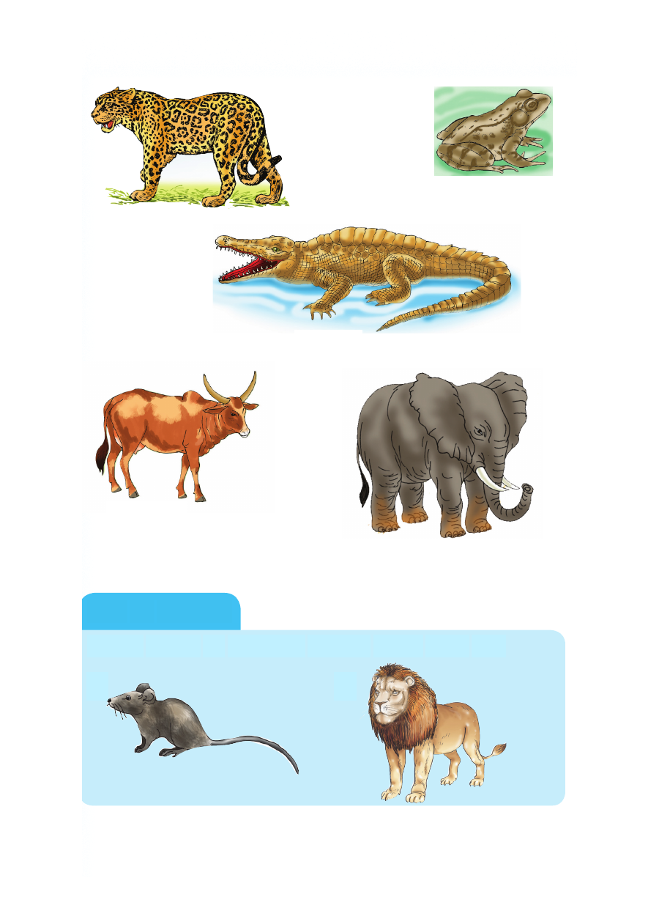

Chura
Chui
Mamba
Ng’ombe
Tembo
Kazi ya kufanya
Andika majina ya wanyama waliopo katika picha hizi.
1. 2.
Chura Chui Mamba Ng’ombe Tembo Kazi ya kufanya Andika majina ya wanyama waliopo katika picha hizi. 1. 2.

Chura
Chui
Mamba
Ng’ombe
Tembo
Andika majina ya wanyama waliopo katika picha hizi.
1. 2.